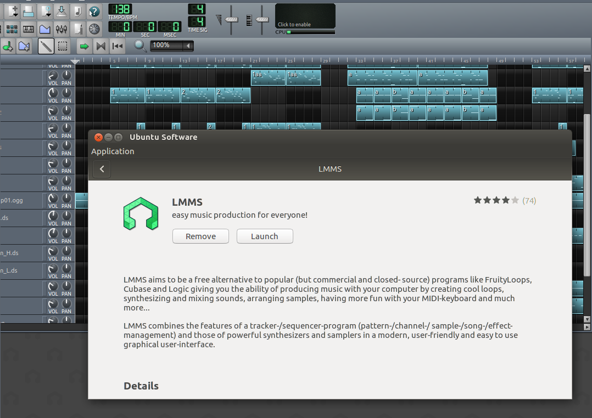
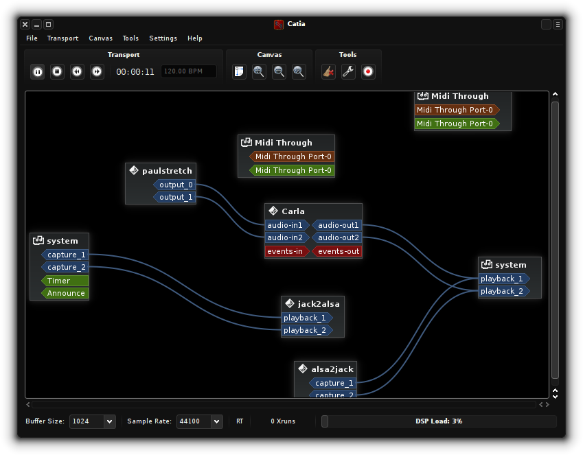

Want to make music on Linux with pro-quality software?
There are plenty of reasons to choose Linux over other platforms for audio production: For me, I was willing to learn some new software, and was sick of being burned by vendor lock-in, not even to mention the crazy high cost of DAW (Digital Audio Workstation) software. I wanted to have a free software audio set-up that I could "set up and forget", so I could stop wasting time tinkering with different options, and instead jump head-first into producing soundtracks for the video games I'm developing on Linux.
So, I investigated 3 different routes, and recorded my results here.
The conclusion? KXStudio is super freaking cool. Seriously: Install once and get a crazy number of instruments and effects, dozens of DAWs and sequencers, on top of a low-latency kernel, all set up and ready to go, all for free. At least in terms of quantity, it's the simplest way to go from 0 to 60 for audio production on any platform. Pro-audio in Linux is totally here.
If that sold you, then just skip over to the last section and download and install the KXStudio distro.
Option 1: Vanilla repos
 LMMS is a fun music creation free software with an easy learning curve, that's actually pretty powerful. It tends to be updated quickly in vanilla repos, so go ahead and install this like you would any other Linux software.
The first -- and typically the last -- stop for any software in Linux is to install it from your distribution's repos. Easy-peasy: either use a GUI application like GNOME or Ubuntu Software (pictured right) or a command-line application such as apt-get (easy as sudo apt-get install lmms audacity to get going).
This method is fine for a few pieces of Linux audio software, notably LMMS and Audacity. However, if you want to try using the complicated stuff with JACK (Ardour1, Non Sequencer, and a bunch of other Linux pro-audio software that I didn't even know about), its not ideal: often the repo versions will be outdated, this software can be difficult to configure, and there are a lot of really cool pieces of Linux audio software that are not even available in many vanilla repos.
Option 2: Adding KXStudio repos
Playing with LMMS is fine and all, but I wanted to use JACK. I mean, its a seriously cool idea: It takes the UNIX philosophy of "small interchangeable applications connected with pipes" into the audio software world. Pipe any application into any other application, MIDI notes, control, or audio channels all get "plugs" that can hook up into each other. Pretty cool, huh? Fortunately the awesome folks at KXStudio maintain packages that make it easy to set up on Ubuntu.
Installing KXStudio repos on Ubuntu 16.04
I'd highly recommend clicking the link and using the full instructions since there's less chance of mistakes, but if you'd rather just copy and paste one huge command and leave your computer chugging, you can use this one:
sudo apt-get install apt-transport-https software-properties-common wget libglibmm-2.4-1v5 && wget https://launchpad.net/~kxstudio-debian/+archive/kxstudio/+files/kxstudio-repos_9.3.0~kxstudio1_all.deb && wget https://launchpad.net/~kxstudio-debian/+archive/kxstudio/+files/kxstudio-repos-gcc5_9.3.0~kxstudio1_all.deb && sudo dpkg -i kxstudio-repos_9.3.0~kxstudio1_all.deb && sudo dpkg -i kxstudio-repos-gcc5_9.3.0~kxstudio1_all.deb && sudo apt-get update && sudo apt-get install kxstudio-default-settings kxstudio-meta-all
Follow the instructions to set up KXStudio repos. Note the steps for versions "later than 15.10".
Update apt cache:
sudo apt-get updateInstall all KXStudio software running this command to install these meta-packages:
sudo apt-get install kxstudio-default-settings kxstudio-meta-all
Troubleshooting KXStudio repos on Ubuntu 16.04
I followed these steps precisely from a vanilla Ubuntu 16.04 installation, and yet I still ran into four issues before I got audio production up and running. If you are taking this route and get stuck, then this might help: Troubleshooting KXStudio repos on Ubuntu 16.04. (I broke them off into their own post, to avoid cluttering up this article.)
All-in-all, though, the easiest and fastest way to get going with Linux pro-audio is just installing the KXStudio distro on a separate partition, which is what I ended up doing.
Option 3: The KXStudio distro
 JACK lets you pipe anything into anything. This is KXStudio's Catia, one of several GUI JACK management tools.
The third option is to keep a separate partition, hard-drive, or computer with your pro-audio set-up, running a distribution dedicated to audio.
Do this one. Really. The time it took to download and install KXStudio was way less than troubleshooting the other options. It was really the only flawless Linux pro-audio experience for me, and the only one I'd recommend.2
It's really a killer feature to not have to worry about breaking your audio software with your normal installation, which you can freely keep updating, while keeping your pro-audio installation clean and stable with everything set up exactly as you need.
Install it on either a separate partition or hard-drive (or a dedicated studio computer). If you've never installed a GNU/Linux distribution before, this is just like installing any other distro.
(Optional) Configure GRUB to rename this installation to KXStudio (by default, it confusingly calls itself "Ubuntu"), and make it not the default (I used GRUB Customizer).
Either keep the default KDE or install a different desktop environment, and then enjoy a fully-tuned Linux audio production set up!
The KXStudio develops some pretty great applications themselves. I personally like to use the following (all ready-to-use):
Cadence for JACK / audio configuration. Gives a high-level control of audio on your system.
Claudia as a "session manager". This is a nicely configured graphical front-end to LADISH, basically, a set of tools that start and stop all your other audio software, hook stuff up, and save your configuration to a project file. This is my first stop: where I start new projects. When I load old projects, it automatically starts everything I was using so I can resume exactly where I left off.
Carla to host and manage the 100s of awesome synths and effects KXStudio comes with, such as amSynth. Very importantly, it also supports directly hosting SFZ soundfonts, so I can use the free-licensed Sonatina Symphonic Orchestra and Salamander Grand Piano.
I eventually settled on MusE as my favorite sequencer. It's a bit dated in appearance, but as a former Cakewalk Sonar user I found its interface the most easy to pick up, and unlike Ardour it has pop-out piano rolls, which is a must-have for me.
Have other suggestions for Linux pro-audio? Let me know in the comments!
Note that for Ardour, another option to get the cutting edge versions is to "pay what you want" to for a subscription to cutting-edge builds. Even if you do this, I still recommend KXStudio in addition since it comes with JACK pre-configured, and with a huge quantity of free software synths and plug-ins that aren't in the normal repos and I didn't even know about. ↩
Just so you know, KXStudio isn't the only Linux Audio distro out there. The two most popular alternatives are Ubuntu Studio and AVLinux. From what I've read, it would seem to me that KXStudio has the best software selection, but I'm curious to know if there are advantages to the other options. ↩